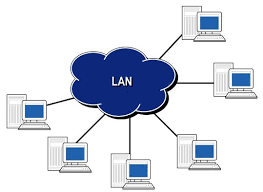
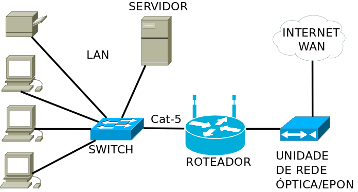

O que é rede Lan?
Uma rede é um grupo de dois ou mais computadores conectados e uma LAN é uma rede contida em uma pequena área geográfica, geralmente no mesmo prédio. Redes WiFi domésticas e redes de pequenas empresas são exemplos comuns de LANs. As LANs também podem ser bastante grandes, embora se ocuparem vários edifícios, geralmente é mais preciso classificá-las como redes de longa distância (WAN) ou redes de área metropolitana (MAN).
Como funciona a rede lan?
A maioria das LANs se conecta à internet em um ponto central: um roteador. As LANs domésticas geralmente usam um único roteador, enquanto as LANs em espaços maiores podem usar adicionalmente switches de rede para entrega de pacotes mais eficiente.As LANs quase sempre usam Ethernet, WiFi ou ambos para conectar dispositivos na rede. Ethernet é um protocolo para conexões físicas de rede que requer o uso de cabos Ethernet. WiFi é um protocolo de conexão a uma rede por meio de ondas de rádio. Muitos dispositivos podem se conectar a LANs, incluindo servidores, computadores desktop, notebooks, impressoras, dispositivos IoT e até mesmo consoles de jogos. Em escritórios, as LANs são frequentemente usadas para fornecer acesso compartilhado aos funcionários internos para impressoras conectadas ou servidores.
Como configurar rede lan:
No vídeo a seguir, publicado no YouTube pelo Lauan Ferreira da Silva, você pode entender como a configura a rede lan no Pfsense.